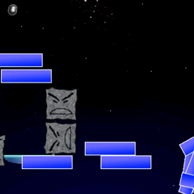
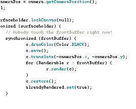
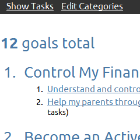
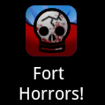

Based on Steve Gibson's Off the Grid project for storing passwords, this project implements an alphabetic "latin square" in Java.
What is "Off the Grid"
Steve Gibson is a security specialist, and has come up with a way for people to generate a random "latin square" to use as a key for all their online and offline passwords. This avoids the problem of users always using the same password for all their websites, because you can use one printout of a latin square to "derive" as many unique passwords as you'd like with a simple strategy based on the domain name.
This works similarly to password generation tools that take a basic password and run a one-way encryption through it with a salt of the website. The benefit of this latin square is that you can print it out and take it with you without worrying about someone stealing it. Since you make up your own method for deriving passwords, there is no indication to a theif what your passwords are. Also, since you can take it offline, you don't have to worry about a server getting hacked and releasing passwords, or some program getting deprecated and locking you out of your passwords.
Implementation
Since a latin square has the constraint that each row and column must contain all the letters of the alphabet exactly once, this means there are many "invalid" latin squares, and you need to dynamically adjust what characters you have to work with as you generate each row. It is also possible to generate some rows that make the following rows impossible - as the constraints for what characters you have left shrink as you get to the last row. It's possible that more than one column has the same letter left to complete the alphabet - in which case the row would be forced to have two characters with the same letter. In this case, my algorithm backs up and retries previous rows randomly to try and get one that is valid. It does this all very quickly, and as you can see from the screenshot, it takes about 20 milliseconds to generate a given latin square.
One interesting aspect of the latin square is that the space of possible valid latin squares have more bits of entropy than normal random number generators, which means that you can't even reach every possible unique latin square by just randomly generating them. Therefore, my solution can't generate all possible latin squares, but the code is flexible enough to take a new random number generator if one was created. Steve Gibson created his own ultra-high entropy PRNG specifically for this project.
This game is essentially a clone of the classic Arkanoid games from the arcade. You controll a little bumper with your phone's trackball, and try to hit the ball as it comes down the screen. If the ball hits any of the bricks above, they break loose and come falling down, obeying the laws of 2D physics (including rotation, rebound, and collision with other bricks)! I used the great library JBox2D for my physics animations.
This is the first game (or any app for that matter) I built on Android. I build it when I had an HTC Hero, and it clearly shows. The screenshot on the left is taken with a Nexus S, which has much better screen resolution (480x800 as opposed to 240x320). I didn't bother to use relative coordinates, so you can see the whole game only takes up a small portion of the screen! Oh well, it was a great learning experience.
One thing that can't be shown in a screenshot, is that I used the Android api to find the direction of gravity, and changed my in-game gravity to match it. Therefore, when the user hit a block and it came falling down, you could move your phone to have it bounce out of the way of your ball.
This project is a 2D Game engine built specifically for android games. I have always been very interested in video game engines, but only recently have had any idea how to actually build one. I still don't, but I had some ideas about how I would go about it - especially after watching some great talks from Chris Pruett about Android game development.
This application features two threads, one that renders the scene, and one that executes the game logic. The rendering thread gets frequently blocked by IO, so it's advantageous to have the game thread allowed to do some processing while the rendering thread displays the last image. I use double buffering, which both allows me to keep the game screen from flickering, but also allows me to build up the next frame of animation on the game thread while the rendering thread displays the last one.
The engine utilizes a tile system to render the screen, and uses a SurfaceHolder to actually do the drawing. The tiles can be any size, and infinitely tiled in the case of ground or grass. The rendering system doesn't use OpenGL, as I didn't want to lose the opportunity for being compatible on multiple platforms.
There is also a rudimentary camera system that currently can be controlled by the GameThread. If desired, the user of this library could control the camera X and Y position with the touchscreen, allowing the user to drag the camera around to view the world.
It all started when I read an article from Sweta Vajjhala's blog about how to track your goals. The idea is that you come up with 101 things that you want to accomplish in about two years. You write those goals down, then come up with a list of tasks for each goal. The first task in each goal should be something you can take action on right now, so that you could pick from any goal on any day and start making progress on it.
The main problem with this idea, is that you will presumably have a list of 101 things that you can do now. It can be hard to keep track of what task goes to what goal and how to organize those goals into overarching themes. So, I did what any good hacker would do, make his own!
The application allows you to create a list of goals, and link each one to a "Category" that the goal falls into. When you look at your goals, you can then see each goal neatly indented under the category it is in. When you start filling out each task for the goal, you can set it as "current", which means it will go into your master task list. The task list then shows you all your current tasks, which you can complete by selecting "done".
I made this app in python/Django with a SQLite DB backing it. It just runs on my local machine. However, I like to see my Goals and tasks while on the go, so I made a special mobile-version that allows me to see goals and tasks from my Nexus S.
This is the game that I had in mind while building the Dackdroid game engine. The name "Fort Horrors!" comes from my idea for this to be a survival horror game.
The premise of the game is that you have Zombies coming at you from all sides, and you need to stay in your fort to keep from getting eaten. You need to build a fort around yourself, but the Zombies are busy breaking down your walls! You need to be constantly repairing your walls and setting up traps to kill the zombies. Every time you kill a zombie, you get some extra materials to keep alive.
To create the demo screenshot you see on the left, I used Dackdroid's tiling engine to make a landscape of grass, then added extra types of tiles for concrete (including special corner tiles that you can see blending into the grass at the edges). The little orange things are actually birds, and each one has it's own AI.
Each bird has a simple three frame animation and flys around the screen with some basic AI. Each bird has a think() stage, and it decides where it needs to fly, flys there, and then thinks about where to fly next. All the birds AI's are in the Game Thread, calculated in a simple for loop across all thinking entities in the game.
As you can see from the debug output, the rendering and logic threads are both running around 20fps, but this is only because I have throttled them that slow - the actual framerate I could get with this demo (about 50 birds) was over 60fps.
Github showcase.
This is just a copy of my .emacs file from my workstation. I usually use emacs for my normal text editing needs, for things such as javascript, html, css, and python code. Although I love my emacs and it's keybindings, I am definitely an eclipse guy when it comes to Java code. There is just no other sane way of editing that stuff!
Also note that I have written at least a little emacs lisp code since I picked up the program. Although I am pretty familiar with functional programming languages in general, I am not very familiar with lisp in particular, so coming up with my own backward-kill-word was definitely a challenge. Also note that I took most of the backward-kill-word code from a post on stackoverflow, so I cannot claim all the credit for this function.